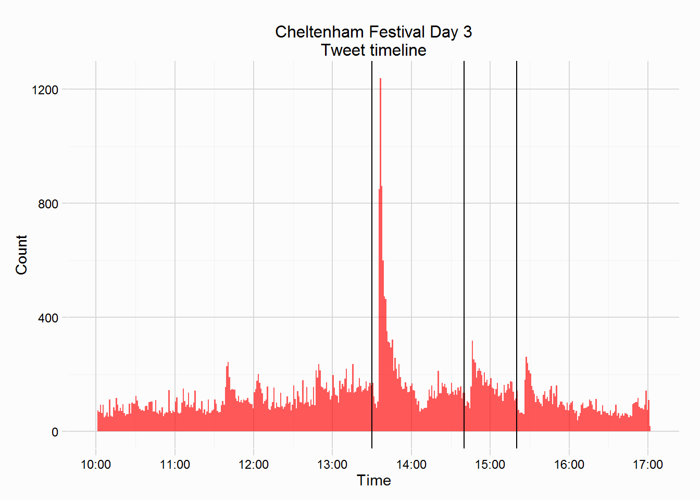
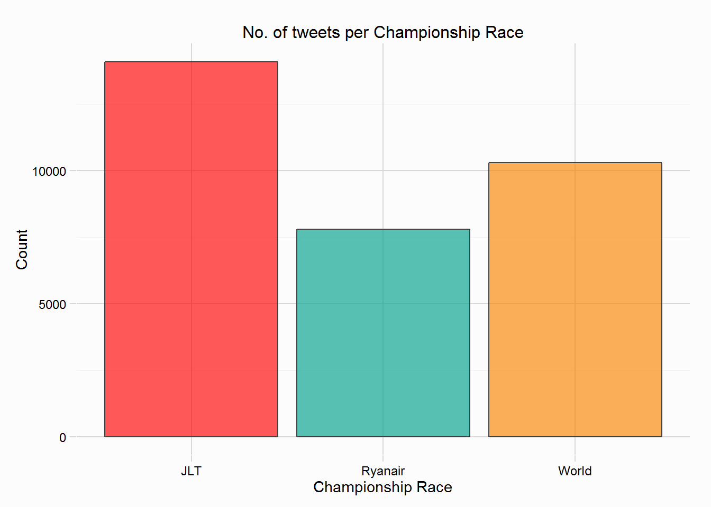
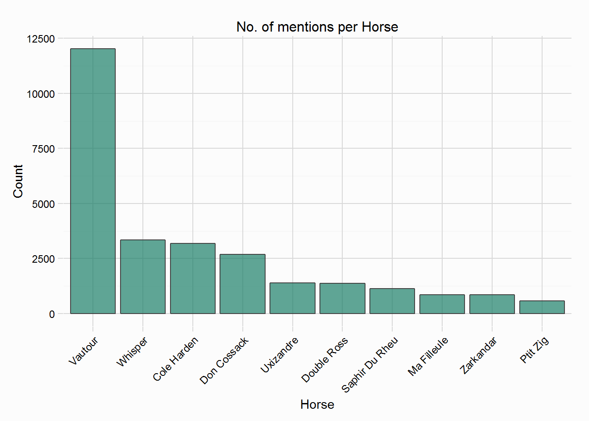
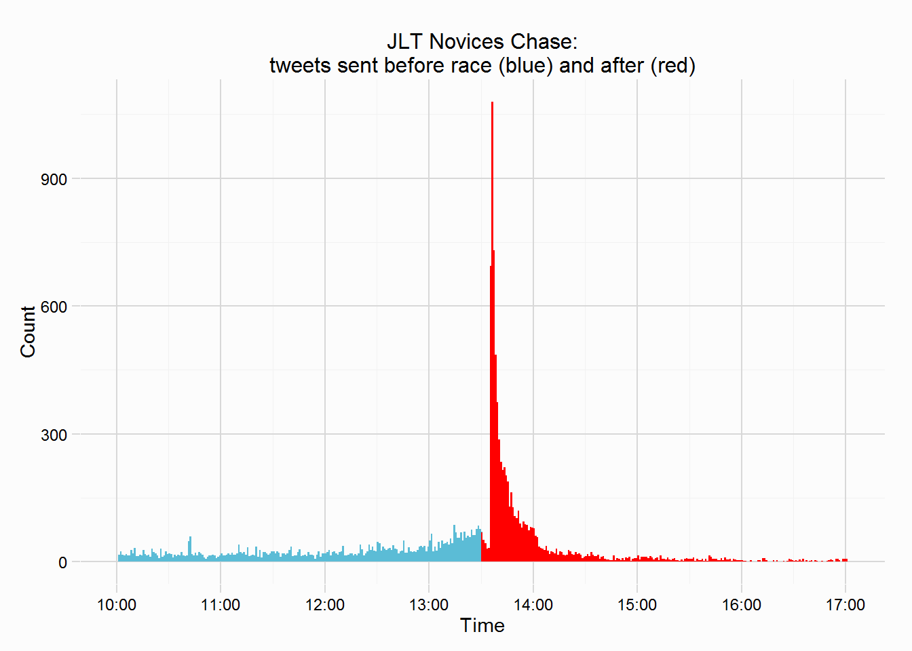
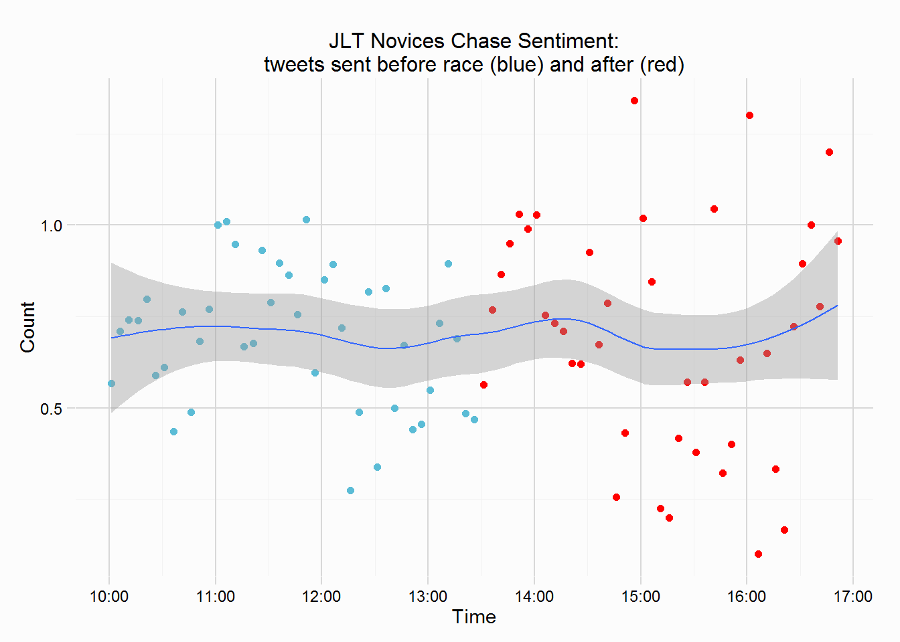
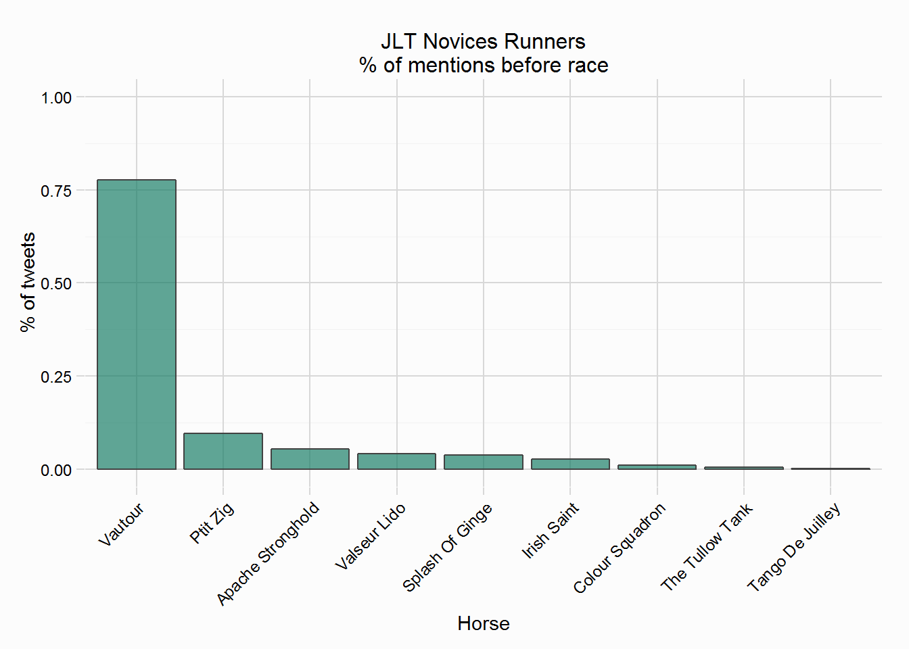
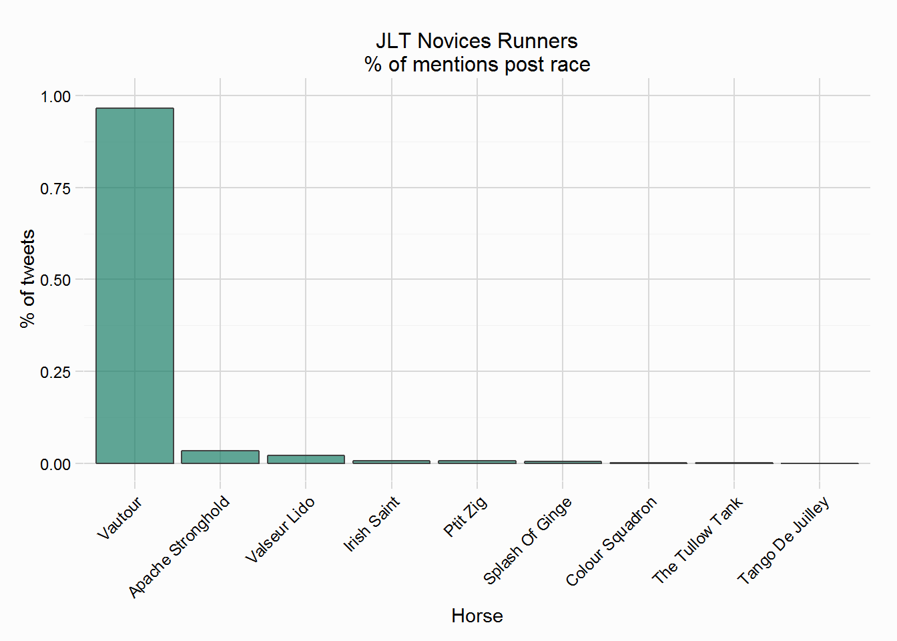

Day Three of the Festival was similar to Day Two in that fewer tweets were collected, unlike Day Two collection wasn’t interupted, so it’s probably the quietest day on twitter, with just 53784 tweets being collected. Tweets were collected if they mentioned any of the runners in the Championship Races (Grade 1s), or a number of related words. As mentioned in the post about Day One, casual fans aren’t as likely to maintain interest over the four days.
The horses ‘tracked’ on day three are shown in the table below:
Again a small footnote, tracking some horses by name will collect tweets that were not about the Festival or the horse, an example on Day Three is the horse Whisper, a runner in the 15:20 World Hurdle. Whisper will be used in everyday tweets, indeed it was mentioned in 3351 tweets. This race won’t be looked at in this post, but I may attempt to address this issue in future posts.
| Day | Race | Time | Horses | n |
|---|---|---|---|---|
| 3 | JLT Novices Chase | 13:30 | Apache Stronghold, Colour Squadron, Irish Saint, Ptit Zig, Splash Of Ginge, Tango De Juilley, The Tullow Tank, Valseur Lido, Vautour | 9 |
| 3 | Ryanair Chase | 14:40 | Balder Succes, Ballycasey, Don Cossack, Double Ross, Eduard, Foxrock, Hidden Cyclone, Johns Spirit, Taquin Du Seuil, Third Intention, Uxizandre, Wishfull Thinking, Wonderful Charm, Ma Filleule | 14 |
| 3 | World Hurdle | 15:20 | Abbyssial, At Fishers Cross, Aubusson, Blue Fashion, Cole Harden, Dedigout, Jetson, Lieutenant Colonel, Monksland, Reve De Sivola, Saphir Du Rheu, Seeyouatmidnight, Tiger Roll, Un Temps Pour Tout, Whisper, Zaidpour, Zarkandar | 17 |
The plot below shows the timeline on Day Three, included in the plot are three vertical lines charting the start times of the various races. These races were the JLT Novices Chase (13:30), the Ryanair Chase (14:40) and the World Hurdle (15:20). The frequency of tweets is lower than on previous days, with only the JLT Novices Chase prompting the twitter crowd to react. The minute shortly after Vautour won prompted over 1200 tweets to be sent, the most for any single minute across all four days.

The two plots below shows the number of tweets that mention a runner from each Championship race, and the most mentioned horses. The most tweeted about race on Day Three was the JLT, with 14091 tweets, the World Hurdle was close behind with 10294 (but bear in mind the horse Whisper will include a large number of mis-classified tweets).


The race I’ll focus on in this post is the JLT Novices Chase, but if anyone wants to see other races, then let me know.
The JLT Novices Chase featured a small field, with just 9 runners, but it was won in very impressive fashion by the copy paste Willie Mullins trained Vautour. The plots below shows the number of tweets sent per minute that mentioned one of the 9 runners, and the sentiment of those same tweets of 10minute intervals. The volume of tweets increased massively as Vautour won by 15 lengths. Also plotted in the sentiment plot is a loess curve, showing that sentiment of the race/winner is confused, with wide swings. Part of this is likely due to the negative lexicon I employed, which classes “monster” and “freak”, as well as swear words like “f**k” and “f**king” as negative, and I think the manner of Vautour’s victory would have produced sentiments like this. (I will perhaps try and “correct” the negative lexicon and come back to this).


Also of interest is which horses were popular on twitter, is there any wisdom in the twitter crowd? The plots below show the number of tweets that mention each of the 9 runners, the plot on the left is restricted to those tweets sent before the race, the plot to the right is tweets after the race. Vautour was a heavy favourite on twitter and was mentioned in 77.8% of tweets that mentioned any runner in the race, he was sent off at 6/4 (implied ~40% chance of victory) by the bookies. Vautour romped home, and it’s no surprise that he dominated the post race mentions in 96.6% of tweets.

